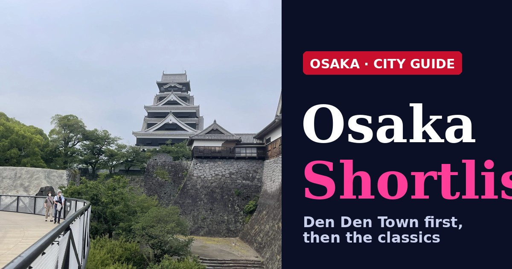
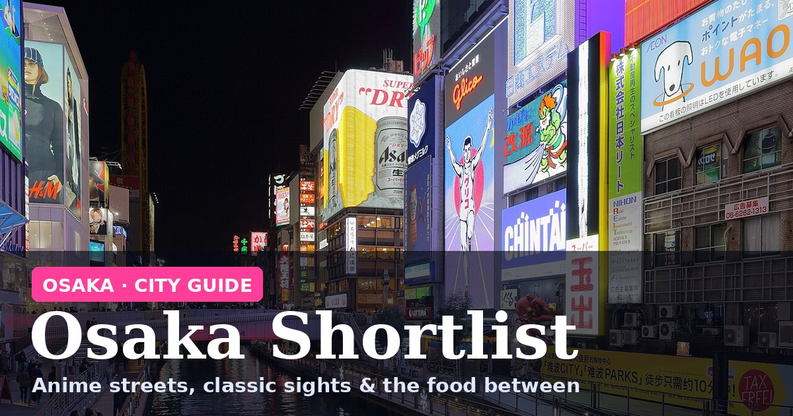
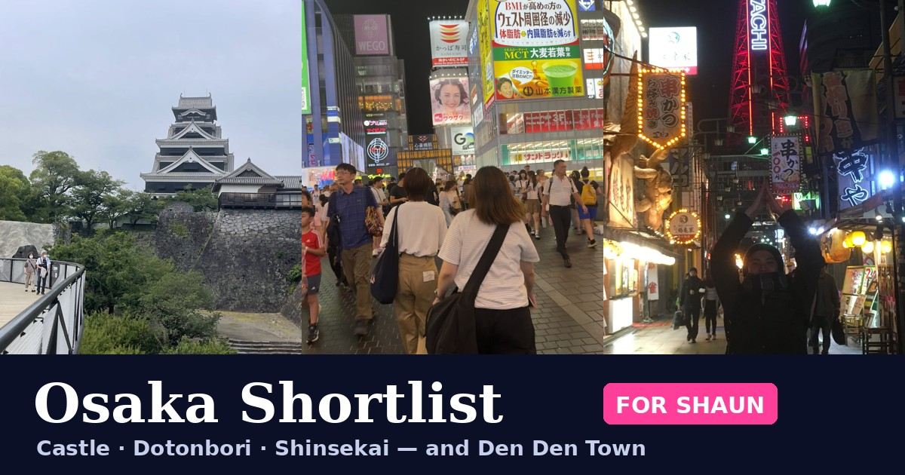
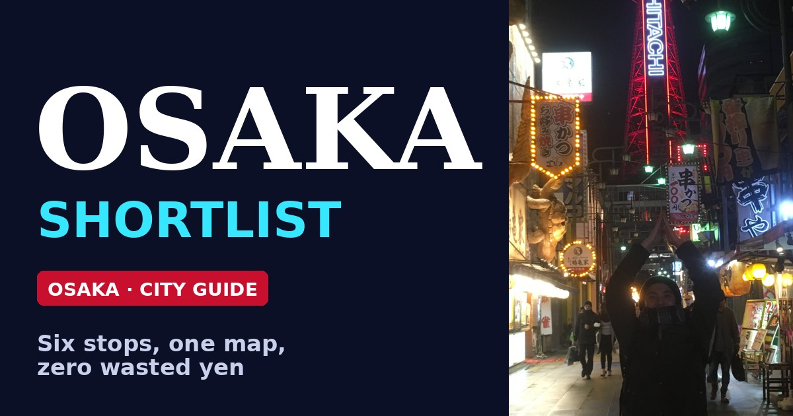
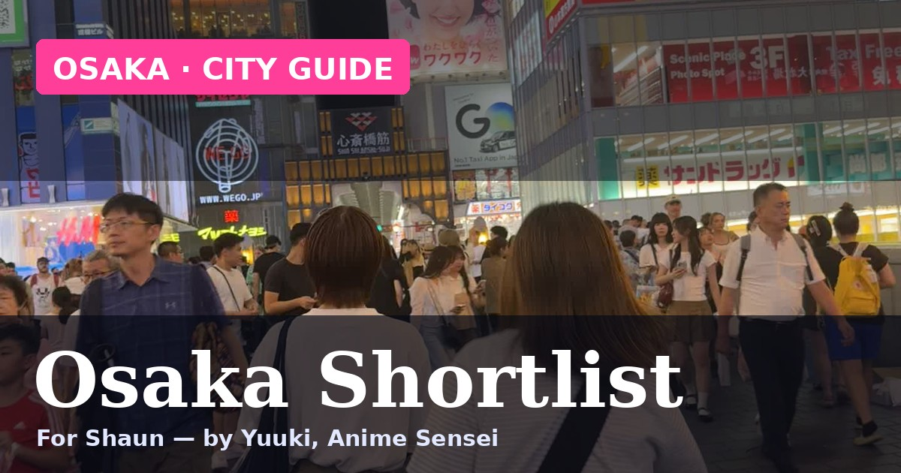

Provisional og:image on the live page is No. 1 until Yuuki picks. Tell me the number and I swap it.

Osaka Castle photo on the left, navy panel with the title on the right. Calm and classic.

Dotonbori at night, full-bleed, title across the bottom. The loudest of the five.

One photo per area — castle, Shinsaibashi street, Tsutenkaku — over a navy title band.

Giant OSAKA type on navy with the lit-up Tsutenkaku on the right.

Yuuki's Shinsaibashi night shot full-bleed with an oversized pink chip.